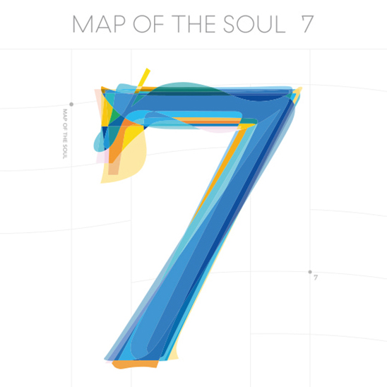
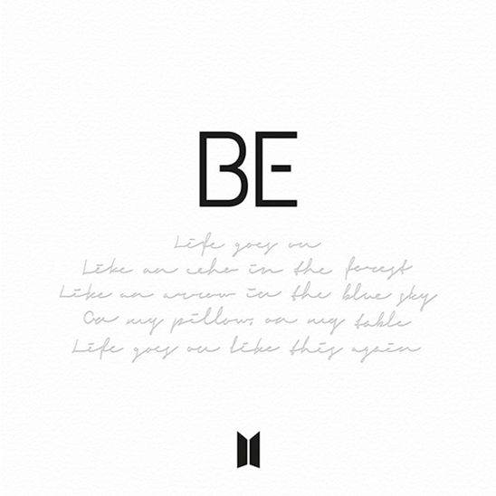

In January, BTS performed “Black Swan” for the first time on The Late Late Show with James Corden. The contrast between such a large scale production on foreign soil, and their early career where they scrambled for empty slots at Korean music shows is astounding. And who would have thought seven years ago those same boys would perform at the 62nd Grammys? RM had featured on a remix of “Old Town Road” in July so when he was asked to perform with Lil Nas X and his other collaborators on the Grammy stage, he brought the rest of the band too. This always-together, always-seven sentiment is best exemplified in their album Map of the Soul: 7 that dropped in February. Songs like “Friends” reminisce on their early friendship, and “We are Bulletproof: the Eternal” expresses how far they’ve come with each other and with their fans.
With the new album series, they were supposed to begin their Map of the Soul Tour in April, but due to the coronavirus pandemic, they postponed all dates. Fans were disappointed but they need not have feared, the internet is here! On June 14, BTS held a 100-minute long online live concert, Bang Bang Con: The Live, as a part of their 7th debut anniversary. The online concert proved to be a big success with 756,000 concurrent viewers in 107 countries and territories. Proving mutually beneficial, they held two pay-per-view online concerts in October which broke their own world record for “most viewers for a paid virtual concert live stream” with 993,000 viewers from 191 countries as compared to their previous record of 756,000 viewers.
BTS released their first English-language single, "Dynamite", on August 21st debuting at number one on the US Billboard Hot 100 chart, their first chart topper, and making them the first all-South Korean act (second Asian act overall) to earn a number one single in the United States. This is especially remarkable considering their songs, just like most foreign language songs, receive little to no radio play in the US. On August 31st, BTS made their VMAs debut with the first live performance of "Dynamite" and won four awards: Best Group, Best Choreography, Best Pop Video, and Best K-pop. During the week of September 28, The Tonight Show with Jimmy Fallon felt there was enough demand, based on their Central Station peformance, to host a BTS week with one new performance every night. Check out one of the performances below!
On November 20th, 2020, they released their fifth Korean studio album, Be containing songs about their thoughts on the pandemic, how they’ve been coping and their hope that one day this will end. Four days later, they received a nomination for Best Pop Duo/Group Performance at the Grammys for hit single, “Dynamite” making them the first K-pop group to be nominated. This is pretty historic considering they’re a boyband and sing in Korean 98% of the time, both attributes not likely to be appreciated by the Grammys. With or without award show validation, BTS trudged onward achieving their third consecutive number one with single “Life Goes On” in just three months (achieving it even faster than any band since The Beatles in 1964).

It seems not even the pandemic could put a stop to BTS’ endless list of well-deserved achievements. Even though I’ve taken the time to list the important awards they’ve received, the real accomplishment is the fan-celebrity relationship they’ve managed to build with audiences who can’t even speak their language. They've opened the minds of millions to foreign art and are a positive representative for the Asian community. It’s the fact that their hard work and passion resurrected a company that almost went bankrupt, but now has the resources to help other promising artists, that has me in awe. But most of all, it’s BTS’ undeniable friendship and teamwork that, as RM always says, “makes the dream work” and that’s a rarity in our individualistic culture. As a long time fan, I believe when BTS does fade into inevitable irrelevancy, they won't die with a flicker, but instead "light it up like dynamite" as their hit single goes.
|  | |
|---|---|
| 4th Full Length Album | Map of the Soul: 7 |
| Genres | Pop · R&B · Hip hop · Rap rock · Trap · EDM |
| About | They look back on their seven years together since debut. The journey wasn’t easy, but BTS accepts both “the self I want to show” and the “self I want to scorn” to at last tell their own story of finding their “real and complete selves”. In other words, the coexisting of their persona, ego and shadow. |
| Song: Jamais Vu | |
| Song: UGH! | |
|  | |
|---|---|
| Album | BE |
| Genres | Pop · R&B · Hip hop · Neo soul · Disco · Funk · EDM |
| About | As a sense of helplessness looms over the world due to the pandemic, BTS opens themselves up to express their mixed feelings about this situation—fear and anxiety mingled with the determination to overcome it. |
| Song: Fly To My Room | |
| Song: Telepathy | |
Became the first South Korean artist to sell more than 20 million albums cumulatively, becoming the best-selling artist in South Korean history.
Headlined YouTube's Dear Class of 2020 online graduation event, performing "Boy with Luv", "Spring Day", and "Mikrokosmos".
Released Japanese album Map of the Soul: 7 – The Journey, which surpassed 564,000 copies in its first week making it the fastest and best-selling album in the country for 2020 at the time.
According to Gaon Chart, Map of the Soul: 7 sold over 4.1 million copies in just nine days after its release, surpassing the record held by their previous album to become the best-selling album in South Korean history and the first album to be certified Quadruple Million.
Map of the Soul: 7 debuted atop the U.S. Billboard 200 with a first-week tally of 422,000 album-equivalent units, making BTS the fastest group to earn four number one albums since the Beatles in 1968.
Map of the Soul: 7 debuted at number one in countries such as Australia, Canada, France, Germany, Ireland, Japan, the United Kingdom and the U.S., making BTS the first Asian group to top the charts in the world's five largest music markets.
“Dynamite” became the first music video on Youtube to surpass 100 million views in less than one day.
Performed “Dynamite” at the 2020 Billboard Music Awards and won the Top Social Artist award, becoming their fourth consecutive year of winning the award.
Became the first group in chart history with two number one Hot 100 debuts with “Dynamite” and “Life Goes On”.
Debuted "Life Goes On" at the 2020 American Music Awards.